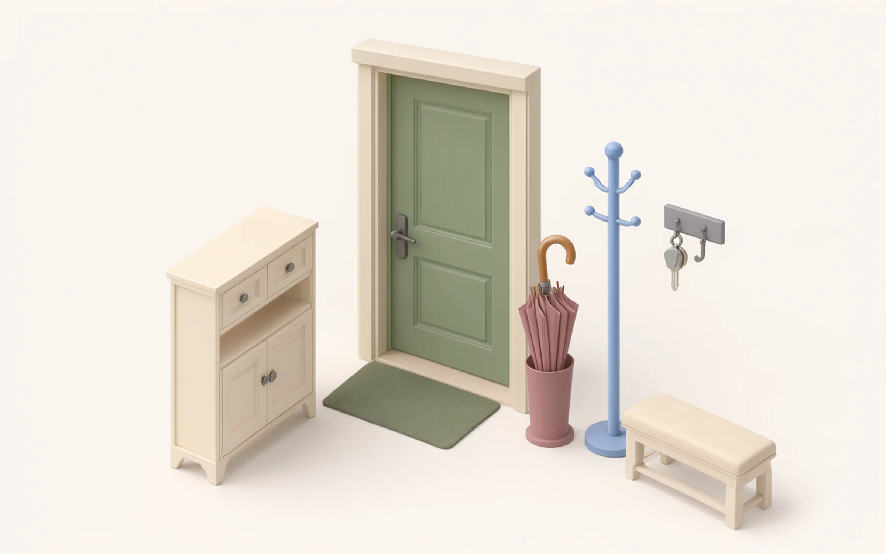

厨房
家居
服装
食物
身体部位
美妆与护肤
出行
Entryway
玄关
场景
卡片
女声
男声

指到或点一下物品
再听一次
shoe cabinet
door mat
umbrella
umbrella stand
coat rack
key hook
entryway bench
shoe cabinet
鞋柜
door mat
门垫
umbrella
雨伞
umbrella stand
伞架
coat rack
衣帽钩
key hook
钥匙挂钩
entryway bench
换鞋凳
‹ Laundry 家务区
家居